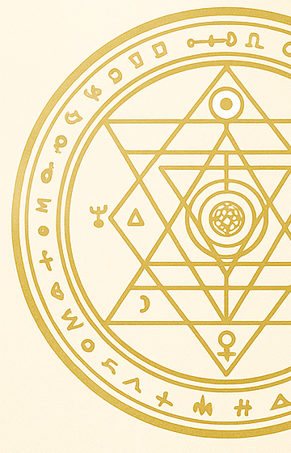
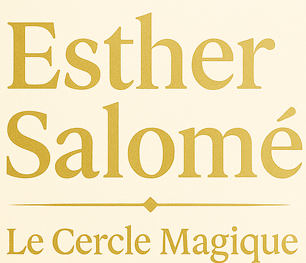
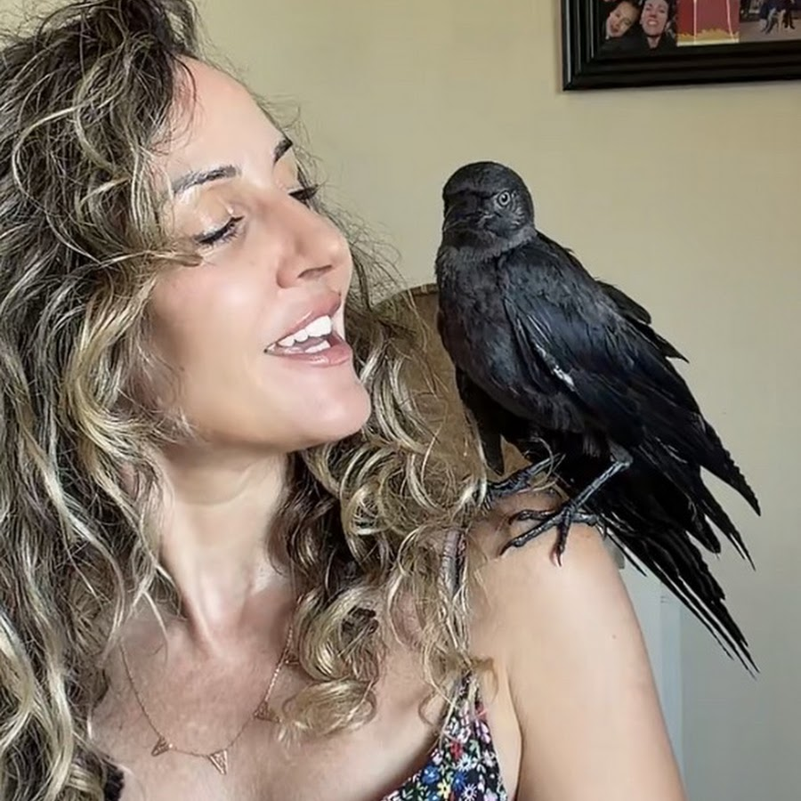

Depuis plus de vingt ans, je t'accompagne grâce à la voyance, la cartomancie et la magie blanche kabbalistique.
Et parfois, avec Hocus Pocus, mon corbeau, je te révèle les messages de l'Oracle de Belline.
Entre intuition, héritage et mystères de l'invisible.

✦ avec Hocus Pocus✦ À paraître : Rituels de guérison de l'âme
Poser ma 1re question offerte Voir les consultationsHocus Pocus choisit trois cartes pour toi. Un tirage offert, toutes les 24 heures.
Prochain tirage dans --
Tirage offert, à visée de divertissement.
ta consultation
Règlement : carte, virement ou PayPal
WhatsApp audio, visio
Chaque rendez-vous est confidentiel et aligné. Ta toute première question est offerte.
Un éclairage rapide et direct : message vocal personnalisé ou appel WhatsApp d'environ 8 minutes.
Réserver →Un éclairage ciblé sur un thème précis : amour, travail, spiritualité, famille.
Réserver →Voyance et médiumnité directe : un échange intense et profond pour explorer ce que l'invisible veut te dire.
Réserver →Reçois une vidéo de ton tirage privé, avec les cartes choisies pour toi par Hocus Pocus.
Réserver →Rituel ancestral : à partir des photos de ta tasse, je lis les formes et les symboles qui se dessinent pour toi.
Réserver →Rituels de magie blanche issus de la Kabbale, protections et suivi des travaux.
En parler →Des rituels de lumière pour te libérer de ce qui te pèse et retrouver ton énergie. Chaque rituel est personnalisé.
Un rituel ancestral pour révéler et absorber les énergies lourdes.
Pour toi, ton foyer et tes proches.
Des rituels issus de la Kabbale et dégagement énergétique pour libérer les blocages et les mémoires qui t'empêchent d'avancer, avec un suivi personnalisé.
Incroyable ! Complètement par hasard, et avec cet oiseau qui pour moi représente tant. Ça parle directement de ma situation actuelle.
— Commentaire Facebook
[Avis à ajouter : un retour de consultation WhatsApp]
— Prénom, ville
[Avis à ajouter : un retour sur un rituel ou une protection]
— Prénom, ville
Envoie-moi un message sur WhatsApp, je te réponds en personne. La magie est déjà en mouvement.
Écrire sur WhatsApp Réserver une consultation